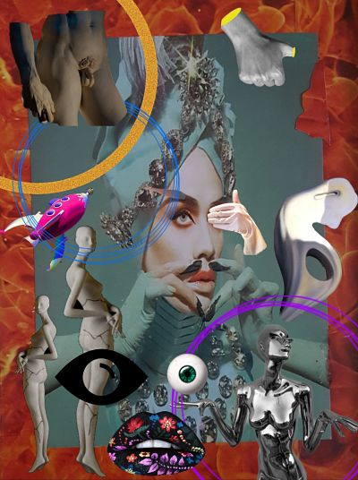
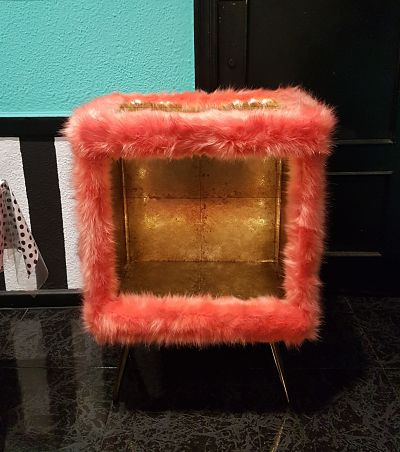
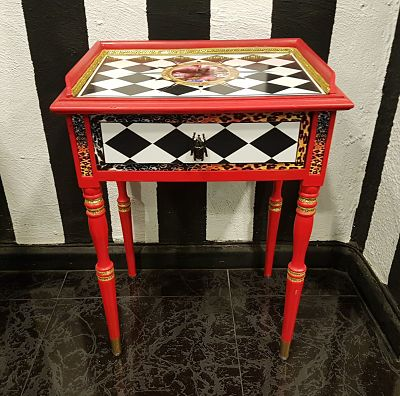

INSTITUTO de BELLEZA

El INSTITUTO de BELLEZA EXPERIMENTAL es la forma que tengo de mostrar a la gente mi creatividad y mi arte. A través de un lenguaje potente, creativo y mordaz con una sobrecarga de imágenes obtenidas de diferentes medios, revelo sentimientos y fustraciones en un escenario loco, crítico y divertido, con un resultado estético y bello. Mi obra muestra surrealismo e ironía con total libertad de creación y sin ninguna atadura, partiendo de fragmentos para concebir un todo. Consigo que mi deconstrucción de la realidad desestabilice al observador sin dejarlo indiferente, mi trabajo es subversivo y refleja un anclaje de la vida cotidiana dentro de una ficción total.
Agrupo todas mis obras en un misterioso hotel victoriano reconvertido en clínica donde se practica la belleza experimental. Funde una marca donde tienen cabida todas las exigencias por extravagantes, especiales o subversivas que sean. Un instituto con apariencia del siglo IXX donde se realiza cirugía experimental e ilegal a quien ingrese en él.
La síntesis del futurismo y el clacisismo es uno de los ejes creativos de este centro liberando el insconciente y entendiéndolo como una irrealidad de realidades. Con una amplia exploración de recursos estéticos te invito a un viaje hacia los sentidos, recorrido lleno de sorpresas visuales donde cada cual encuentra su mensaje dando una visión irónica de pequeños momentos convertidos en grandes aventuras.

Fantasía y locura disfrazan fragmentos cotidianos de la vida sin preguntar qué es lo adecuado o lo políticamente correcto. El hecho de conferir la realidad dentro una ficción da a la representación un halo de ensoñación que capta la atención del espectador, paradoja creativa que pone de manifiesto valores que son importantes para mí.
Bajo una paleta cromática psicodélica y misteriosos detalles en la composición, muestro que soy un artista autodidacta con la habilidad de crear un collage sin ningún guion preconcebido y construyendo una atmosfera ingeniosa, obtenida de la observación, de vivencias y del dialogo interior conmigo mismo. Trabajo la premisa de abordar cualquier tema de belleza con mi visión amarga y reflejando una actitud de rebelión sutil, permanente y compleja exsorcizando sus hambrientos demonios interiores.
Este es un proyecto muy personal que incluye la elaboración de los collage, COLLAGENO, la creación de unas cajas decorativas, denominadas HIPNOTIC BOX, y como su nombre indica te hipnotizan por su impacto visual y su belleza y la restauración de muebles antiguos, PROYECTO LAZARO devolviéndolos a la vida con mi más personal y único, customizandolos con mi creatividad y mi locura.
 